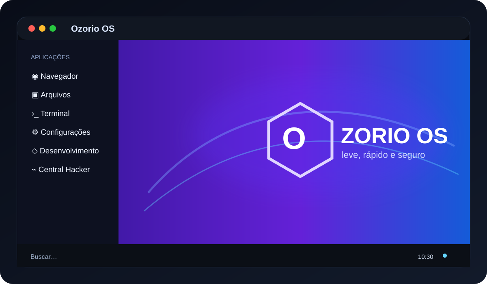
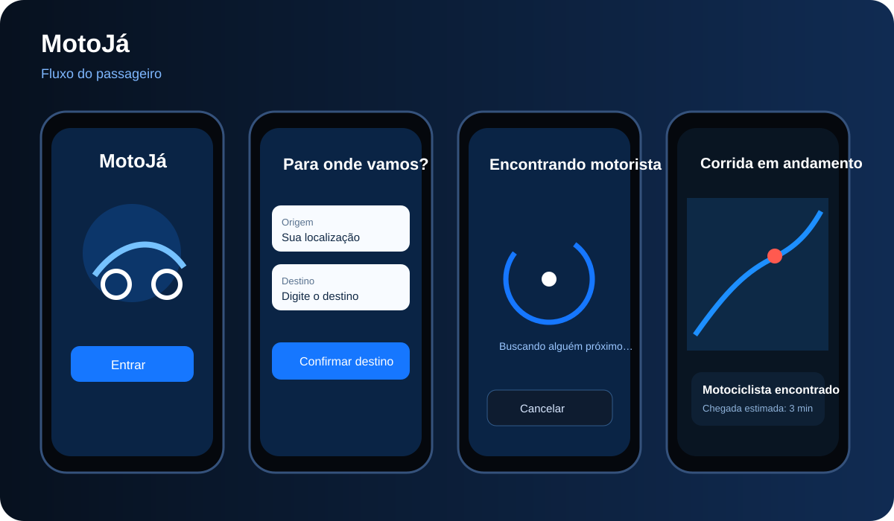
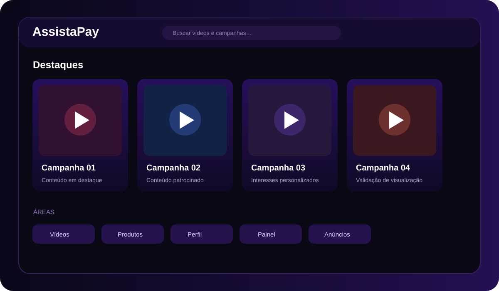
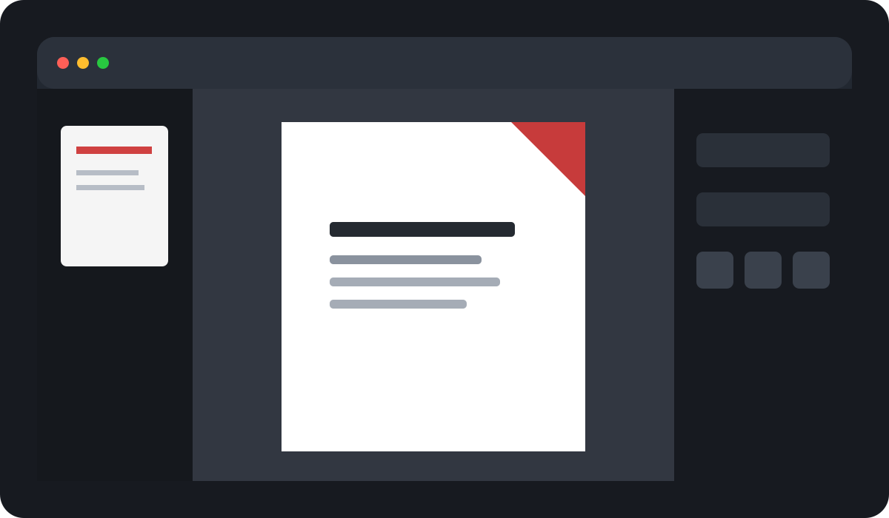
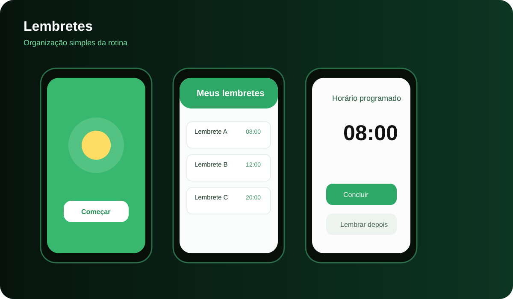

Arquitetura
Separação de responsabilidades e código modular.
Desenvolvedor de software com projetos práticos em aplicações web, mobile, Linux e experiências digitais. Foco em soluções úteis, interfaces claras e arquitetura preparada para evoluir.
SOBRE MIM
Meu trabalho começa pelo problema, não pela tela. Busco entender o fluxo do usuário, regras de negócio, persistência, qualidade e como a solução pode crescer sem ficar difícil de manter.
Separação de responsabilidades e código modular.
Interfaces responsivas e fluxos simples.
Validação, tratamento de erros e testes.
PORTFÓLIO
Primeiro os destaques em carrossel. Logo abaixo, escolha uma categoria para filtrar os cards.

LinuxSISTEMA OPERACIONAL
Distribuição Linux leve, pensada para computadores antigos, com identidade própria, ferramentas integradas e organização modular.
 Mobile
MobileOFFLINE-FIRST
Pedidos a fornecedores via WhatsApp com operação offline, persistência local e separação entre domínio, infraestrutura e interface.

MobileMOBILIDADE
Protótipo de corridas de moto com jornada do passageiro, origem, destino, estimativa, busca do motociclista e avaliação.
Mobile
Aplicativo offline-first para pedidos a fornecedores.

Web
Ferramenta
AndroidAplicativo de lembretes com distribuição e atualização de APK.
COMPETÊNCIAS
HTML, CSS, JavaScript, TypeScript e responsividade.
React Native, Expo e persistência local.
Separação clara de responsabilidades.
Hierarquia visual, jornadas simples e protótipos.
Customização, scripts e builds.
Validação, edge cases e testes.
LABORATÓRIO
Meu perfil reúne sistemas, ferramentas, aplicativos e estudos que documentam minha evolução técnica.
CONTATO
Veja meus projetos, código e evolução técnica diretamente no GitHub.